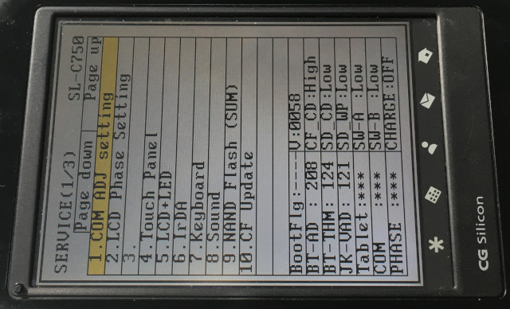
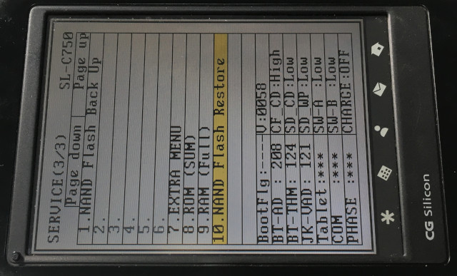
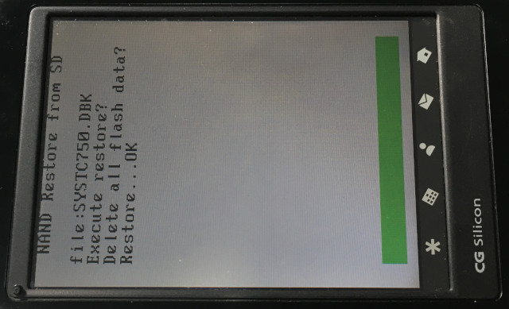
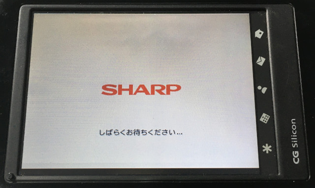
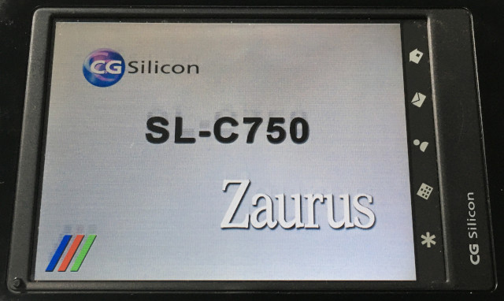
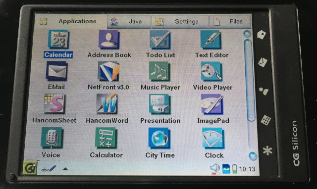

參考資訊：
http://www.trisoft.de/download/
步驟如下：
1. 下載https://github.com/steward-fu/website/releases/download/zaurus/recovery_c750.zip
2. 解開取得systc750.dbk
3. 格式化SDCard(1GB)成FAT16檔案系統且不要有磁碟標籤
4. 將systc750.dbk檔案複製到SDCard根目錄
5. 將機器的電池以及電源拔掉
6. 將SDCard插入機器
7. 將機器背面的電池開關切到使用時
8. 按住機器的Fn + D + M並且不要放開
9. 將電池放入機器(此時還不可以放開Fn + D + M)
10. 等到開機出現如下畫面才可以將手放開





